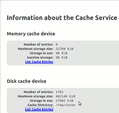

Tuning
Archivierte Anleitung
Dieser Artikel wurde archiviert, da er - oder Teile daraus - nur noch unter einer älteren Ubuntu-Version nutzbar ist. Diese Anleitung wird vom Wiki-Team weder auf Richtigkeit überprüft noch anderweitig gepflegt. Zusätzlich wurde der Artikel für weitere Änderungen gesperrt.
Zum Verständnis dieses Artikels sind folgende Seiten hilfreich:
Allgemeine Optimierungen¶
Um das Browsen (nicht den Start) mit Firefox zu beschleunigen, gibt es einige hilfreiche Einstellungen. Zunächst öffnet man mit der Eingabe von
about:config
in der Adressleiste die Konfigurationsdatei von Firefox. Hier ändert man nun folgende Werte ab (über Filter lassen sich diese leicht finden):
"network.dns.disableIPv6" auf "true" setzen (Rechtsklick -> Umschalten)
Verhindert die Verwendung von IPv6.
Achtung!
Die Verwendung von Pipelining (die nachfolgenden drei Tipps) ist nicht HTTP-Standard-Konform. Viele Server reagieren unter Umständen sehr langsam, bis hin zum Abbruch, was in unterschiedlichen Fehlermeldungen (meist "Server nicht erreichbar") mündet. Pipelining sollte nicht verwendet werden.
"network.http.pipelining" auf "true" setzen (Rechtsklick -> Umschalten)
Nun schickt Firefox mehrere Anfragen gleichzeitig über eine TCP-Verbindung.
"network.http.pipelining.maxrequests" auf "12" setzen (Rechtsklick -> Bearbeiten)
Anzahl der gleichzeitigen Anfragen. Hier kann man ein bisschen experimentieren. Bei neueren PCs kann ohne Probleme ein Wert bis zu 24 eingestellt werden.
"network.http.proxy.pipelining" auf "true" setzen (Rechtsklick -> Umschalten)
Pipelining über den Proxy-Server.
"ui.allow_platform_file_picker" auf "true" setzen (Rechtsklick -> Umschalten)
Damit erhält man einen wesentlich ergonomischeren Dateidialog ("Durchsuchen"-Buttons für Uploads, Datei-Downloads, etc.), als den Standard-Datei-Dialog. Vor allem unter Gnome (GTK) eine echte Verbesserung.
Nun noch einen neuen Eintrag anlegen (Rechtsklick -> "Neu -> Integer")
"nglayout.initialpaint.delay" auf "0" setzen
Gibt die Zeit (in Millisekunden) an, die Firefox nach dem Empfang von Daten wartet, bevor er diese an den Bildschirm sendet. Je kleiner der Wert, desto schneller geht es. Dazu braucht man jedoch auch einen schnellen Computer und DSL. Für einen langsameren PC (z.B. Pentium III) und ISDN ist ein Wert von 100 ganz gut. Da kann man aber wieder experimentieren.
Berücksichtigung des Systems und der Anbindung¶
Hier einige Optimierungsvorschläge um den Firefox zu tunen. Um die Datei user.js (bzw. prefs.js) komfortabel bearbeiten zu können, empfiehlt sich die Erweiterung "ChromEdit". Natürlich ist sie nicht notwendig, da man die Datei im Firefox-Profilordner auch per normalem Editor modifizieren kann.
Hinweis:
ChromEdit steht nur für Firefox in der Version 1.0.x zur Verfügung! Für die Versionen ab 1.5.x muss ein Editor verwendet werden. Alternativ erreicht man dies auch mittels der Erweiterung MR Tech Local Install  - via Menü "Extras -> Eigene Konfiguration bearbeiten -> Chrome-Editor".
- via Menü "Extras -> Eigene Konfiguration bearbeiten -> Chrome-Editor".
Zuerst wählt man die Erweiterung "ChromEdit" aus und klickt auf den Reiter "user.js (bzw. prefs.js)" oder man öffnet die Datei in einem Editor [1]. Dort fügt man diese Zeile ein:
//Seitenaufbau beschleunigen (In Millisekunden; Normalwert ist 250)
user_pref("nglayout.initialpaint.delay", 0);Anschließend schaut man, welche der folgenden Auswahlmöglichkeiten zu dem Rechner und der Internetverbindung passt:
Schneller Computer, schnelle Internetverbindung (z.B. DSL 2000)
//Schneller Computer, schnelle Internetverbindung
user_pref("content.interrupt.parsing", true);
user_pref("content.max.tokenizing.time", 2250000);
user_pref("content.notify.interval", 750000);
user_pref("content.notify.ontimer", true);
user_pref("content.switch.threshold", 750000);
user_pref("nglayout.initialpaint.delay", 0);
user_pref("network.http.max-connections", 48);
user_pref("network.http.max-connections-per-server", 16);
user_pref("network.http.max-persistent-connections-per-proxy", 16);
user_pref("network.http.max-persistent-connections-per-server", 8);
user_pref("browser.cache.memory.capacity", 65536);
Schneller Computer, langsamere Internetverbindung (z.B. DSL 1000)
//Schneller Computer, langsamere Internetverbindung
user_pref("content.max.tokenizing.time", 2250000);
user_pref("content.notify.interval", 750000);
user_pref("content.notify.ontimer", true);
user_pref("content.switch.threshold", 750000);
user_pref("network.http.max-connections", 48);
user_pref("network.http.max-connections-per-server", 16);
user_pref("network.http.max-persistent-connections-per-proxy", 16);
user_pref("network.http.max-persistent-connections-per-server", 8);
user_pref("nglayout.initialpaint.delay", 0);
user_pref("browser.cache.memory.capacity", 65536);
Schneller Computer, langsame Internetverbindung (z.B. ISDN)
//Schneller Computer, langsame Internetverbindung
user_pref("browser.xul.error_pages.enabled", true);
user_pref("content.interrupt.parsing", true);
user_pref("content.max.tokenizing.time", 3000000);
user_pref("content.maxtextrun", 8191);
user_pref("content.notify.interval", 750000);
user_pref("content.notify.ontimer", true);
user_pref("content.switch.threshold", 750000);
user_pref("network.http.max-connections", 32);
user_pref("network.http.max-connections-per-server", 8);
user_pref("network.http.max-persistent-connections-per-proxy", 8);
user_pref("network.http.max-persistent-connections-per-server", 4);
user_pref("nglayout.initialpaint.delay", 0);
user_pref("browser.cache.memory.capacity", 65536);
langsamer Computer, schnelle Internetverbindung
//langsamer Computer, schnelle Internetverbindung
user_pref("content.max.tokenizing.time", 3000000);
user_pref("content.notify.backoffcount", 5);
user_pref("content.notify.interval", 1000000);
user_pref("content.notify.ontimer", true);
user_pref("content.switch.threshold", 1000000);
user_pref("content.maxtextrun", 4095);
user_pref("nglayout.initialpaint.delay", 1000);
user_pref("network.http.max-connections", 48);
user_pref("network.http.max-connections-per-server", 16);
user_pref("network.http.max-persistent-connections-per-proxy", 16);
user_pref("network.http.max-persistent-connections-per-server", 8);
user_pref("dom.disable_window_status_change", true);
langsamer Computer, langsame Internetverbindung
//langsamer Computer, langsame Internetverbindung
user_pref("content.max.tokenizing.time", 2250000);
user_pref("content.notify.interval", 750000);
user_pref("content.notify.ontimer", true);
user_pref("content.switch.threshold", 750000);
user_pref("nglayout.initialpaint.delay", 750);
user_pref("network.http.max-connections", 32);
user_pref("network.http.max-connections-per-server", 8);
user_pref("network.http.max-persistent-connections-per-proxy", 8);
user_pref("network.http.max-persistent-connections-per-server", 4);
user_pref("dom.disable_window_status_change", true);Man fügt dementsprechend den passenden Block ein und speichert die Änderungen.
Quelle: Firefox-Forum 
Firefox-Erweiterungen zur Beschleunigung¶
Wer die Einstellungen nicht alle per Hand vornehmen möchte, kann sich eine der beiden Erweiterungen installieren:
Die erste bekommt man auf der genannten Mozilla-Website, die zweite bei Erweiterungen.de. Fasterfox Lite richtet nach einem Browser-Neustart automatisch eine optimale Einstellung ein, man kann aber auch über Extras -> Add-ons -> Erweiterungen -> Fasterfox Lite (Button Einstellungen) die Konfiguration selbst vornehmen.
Verlagerung des Browser-Caches¶
 Da der Internet-Browser das meistgenutzte Programm ist, macht es Sinn, diesem mitzuteilen, dass es den Programm-eigenen Cache ebenfalls nach /tmp und damit auf die vorher eingerichtete RAM-Disk schreibt. Dies verringert erneut zahlreiche Schreibzugriffe auf die SSD/HDD.
Man öffnet einen neuen Tab im Firefox und gibt in diesen about:config ein. Die Warnung, welche man sieht, ruft man diese Seite erstmals auf, kann man auf die leichte Schulter nehmen, aber sollte sie durchlesen. Man klickt nun mit der rechten Maustaste in das große, weiße Feld und wählt "Neu -> String". Im aufpoppenden Fenster gibt man den Namen browser.cache.disk.parent_directory ein und bestätigt mit OK. Im nächsten Fenster gibt man als Wert /tmp ein. Auch dies wird mit OK bestätigt und man kann den Tab wieder schließen.
Nach einem Neustart des Firefox ist die Änderung aktiv. Überprüfen kann man dies indem man wiederum in einem neuen Tab about:cache eingibt. Dort sollte Cache Directory: /tmp/Cache stehen und anzeigen, dass der Cache nun in /tmp liegt.
 Übersichtsartikel
Übersichtsartikel- Erstellt mit Inyoka
-
 2004 – 2017 ubuntuusers.de • Einige Rechte vorbehalten
2004 – 2017 ubuntuusers.de • Einige Rechte vorbehalten
Lizenz • Kontakt • Datenschutz • Impressum • Serverstatus -
Serverhousing gespendet von